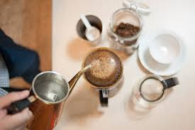

من اشهر انواع القهوة المقطرة
قهوة شبه الجزيرة
صنع القهوة في شبه الجزيرة (المملكة العربية ال
سعودية واليمن والعراق والإمارات العربية المتحدة)
من حبوب محمصة قليلاً، غالبًا ما يكون متبل بالهيل
.والزعفران (مما يعطيها لونًا ذهبيًا) والقرنفل والقرفة
مينينجيتش Menengiç
قهوة Menengiç التركية مصنوعة من حبوب مختلفة تمامًا وليس من حبوب البن على الإطلاق, إنها قهوة مصنوعة من حبوب شجرة .Pistacia terebinthus، موطنها جنوب شرق تركيا
ميرا
قهوة ميرا هي أقوى مرارة قليلاً (كلمة ميرا مشتقة حرفياً من الكلمة العربية “المر”). تأتي النكهة المرة من الحبوب التي يتم تحميصها مرتين، وليست مطحونة تمامًا .مثل القهوة التركية التقليدية
أدوات القهوة المقطرة
قمع التقطير
يوضع بداخل القمع الفلتر ليمكننا من ترشيح القهوة بسهوله
فلتر للترشيح
يستخدم الفلتر لترشيح القهوة بسهولة , و تتعدد أنواع الفلاتر , مثلًا منها الفلاتر الورقية و القماشية و غيرها
إبريق لصب المياه
يستخدم الإبريق في صب المياه أثناء عملية الترشيح , و يتميز بتصميمه الفريد الذي يساعد على صب الماء بدقة كبيرة
طريقة تحضير القهوة المقطرة
:الخطوة الأولى
قم بتجهيز الفلتر و ضعه في داخل قمع التقطير ،
ثم قم بسكب الماء المغلي في الفلتر حتى يبتل و عليك بسكب
الماء في كافة جوانبه و حوافه ليتم ترطيبه لأزالة خواص الورق من طعم
أو رائحة ولكى يساعدة على ثبات الفلتر ان كان ورقى او قماشي،
وحاول ان تجعل الماء الساخن يلمس جميع
جوانب كوب التقطير للحفاط على درجة حرارته ،ثم قم برفع الماء المتبقي .
:الخطوة الثانية
لآن قم بوضح حبوب البن المطحونة مثل حبات السكر و
ليست مسحوق ناعم في الفلتر المحضر مسبقا, بعد ذلك عليك بسكب الماء بشكل بطئ جدا
، و لابد من صب الماء في المنتصف .
:الخطوة الثالثة
اترك القهوة مع الماء حتى تصفي تماما من كافة الحبوب
و سوف تجد أن مشروب القهوة قد تركز في الدورق السفلي ،
و بعد أن يصفى تماما سوف تكون القهوة جاهزة لتتناولها
، يمكنك سكبها في كوب التقديم ،
و يمكنك أن تضع عليها بعض قطرات الحليب حسب الرغبة